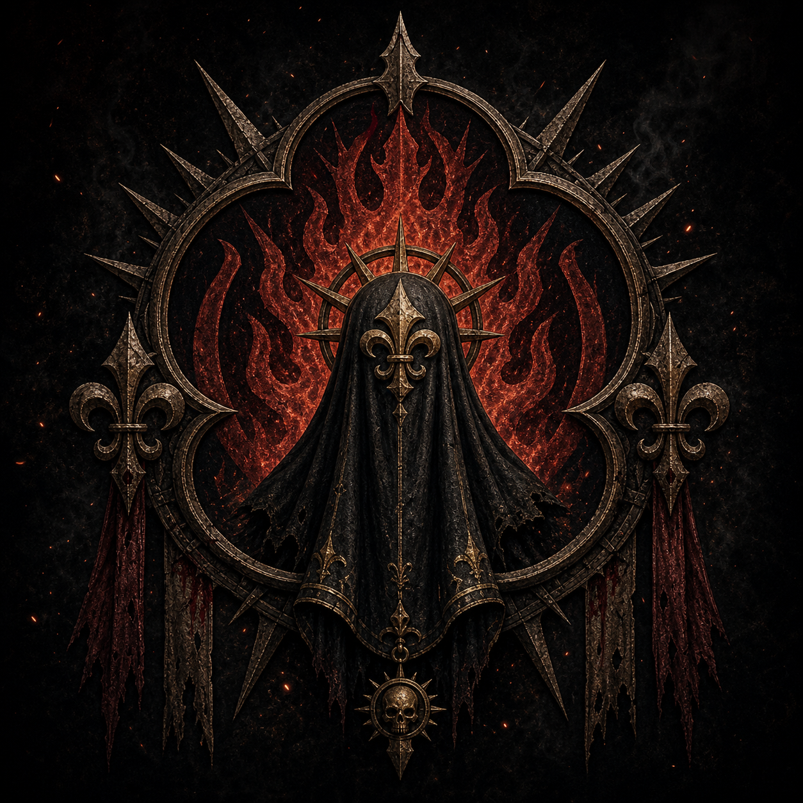
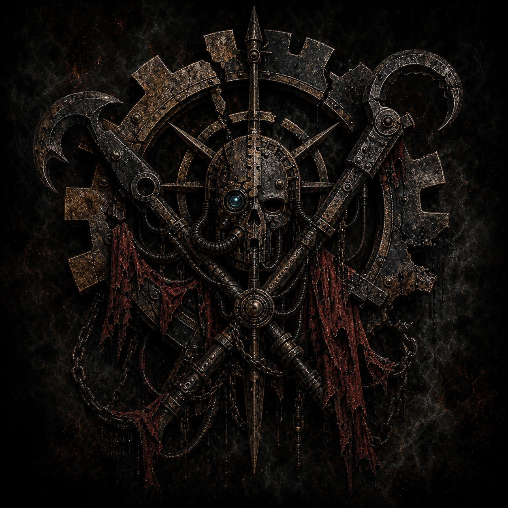
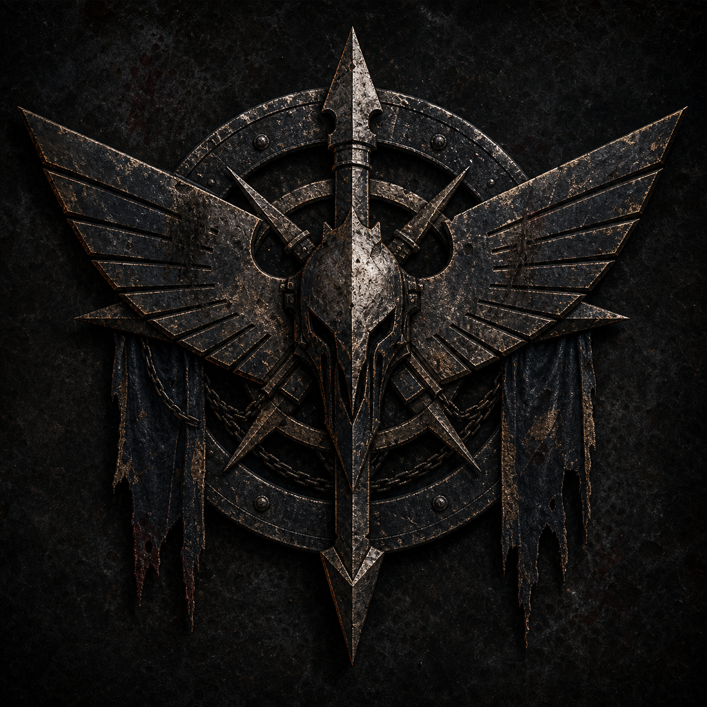

The Covenant of Dust — Campaign Codex
The canonical reference for names, factions, places, characters, special roles, and the persistent state tracked across chapters. Every chapter document draws its names from here. Keep this the single source of truth; if a name changes, change it here first.
How this campaign is played (rules frame). Mechanically this is treated as one Kill Team force, co-managed by three players — one player per fireteam (Sisters / Scavengers / Navy). The opposition and all NPCs are run by the Game Master (Peter). Progression and the cross-team economy run on Kill Team 2024 "Spec Ops" plus this campaign's own tracks. This codex gathers the narrative, names, places, role flavour, and objectives of the campaign.
The premise in one paragraph
Three Imperial warbands — a Sororitas mission, a clade of rogue tech-salvors, and a squad of Navy armsmen with a secret — are trapped together as the desert city-world of Sarrenhold falls to an Ork Waaagh!. To live, they must fight free together. To get anywhere, they must seize a warp-capable ship. And once free, each owes the others a debt — so they swear the Covenant of Dust, an oath to see every one of their separate errands through before they part. Fate has other plans: the Blackstone Fortress drags their ship from the warp, and the covenant is tested one final time in the ancient dark.
The three teams (the player force)
1. The Order of the Ember Veil — Adepta Sororitas

- Models: Sisters of Battle figures.
- Who they are: A small Sororitas mission attached to the Shrine of Saint Auria in Sarrenhold's cathedral district. Pious, disciplined, unbending.
- Public goal: Recover the relics of Saint Auria (her ashes and gauntlet) from the desecrated shrine and bear them to the temple-world of Hallowmere for re-consecration.
- Secret / tension: The least secretive team — but the most dangerous to the others, because their zeal makes them the ones who would punish the Navy's desertion and the Scavengers' theft if either were exposed.
- Notable characters:
- Sister Superior Castellan Helewys Korren — team leader; resolute, suspicious of the other two warbands but bound by necessity.
- Hospitaller Sister Verene — the Medic role (see Roles). Also the only one who can open Saint Auria's reliquary-vault.
- Imagifier Sister Davant — bears the Order's banner; the Zealot role.
2. The Station Forgers — Adeptus Mechanicus proxy (rogue salvage clade)

- Models: "Station Forgers" scavenger miniatures.
- Who they are: A semi-legitimate clade of void-scavengers and disavowed tech-priests who strip hulks and dead worlds for lost technology. They wear the Cog but no forge world owns them.
- Public goal: Recover a data-vault buried in Sarrenhold's Administratum bunkers that holds the coordinates to a lost STC cache; then reach that world — Mygos Tertius — and lift the technology.
- Secret / tension: They are not true Imperial representatives. In the bunker (Ch.1) they steal from a still-defended Imperial stronghold, and Adept Vire quietly pockets more than the coordinates — a fragment whose nature even the other Forgers don't fully know.
- Notable characters:
- Magos-Salvor Tobek — clade leader; cold, transactional, keeps the covenant because the maths favour it.
- Adept Vire — the Tech-Adept role; interfaces with ancient, Ork, and Blackstone systems. A small, Jawa-like hooded scavenger; carries the secret fragment.
- The Drudge — a lean, mind-wiped salvage-hauler on skittering arachnid legs, buried under lifter-servos and load-rigs; the Hauler role (needed to move heavy salvage and the STC core).
3. The Penitents of the Lance — Imperial Navy armsmen (deserters)

- Models: Imperial Navy tactical / Breacher figures.
- Who they are: A breacher squad from the frigate Lance of Tagaris. They fled their ship. To the galaxy they are deserters; in truth they were framed — blamed for a massacre ordered by their own commanding officer, Flag-Commodore Auger Drask, to bury his crime.
- Public goal (the cover story): "We're just trying to get off-world like everyone else."
- Secret / tension: Desertion. If the Sisters learn the truth before the Penitents can prove their innocence, the covenant could turn to bloodshed. Their real meta-goal: reach Vigil Station Antias and recover the sealed, authenticated fleet log the Lance of Tagaris mirrored there before Drask doctored his copy — the one record a tribunal can't dismiss as a fugitive's forgery. (Sabine Orr carries only a copy; alone it proves nothing.)
- Notable characters:
- Armsman-Sergeant Corvin Roe — team leader; carries the guilt of survival.
- Flight-Officer Dax Kell — the Pilot role; the only hand who can fly the shuttle and, later, wrestle the captured kroozer through the warp.
- Master-at-Arms Sabine Orr — the Strategist role; keeps the squad's hidden charts and a memorised map of old Imperial transit routes and the conspiracy that damns Drask.
The special roles (the "role flavour")
Each role is story-gated: in a specific chapter, that character is the only one who can clear a specific beat. Losing or wounding them doesn't end the campaign — it forces the harder, more interesting branch. Peter decides the exact in-game effect; the flavour is fixed here.
| Role | Character | Essential in | What they unlock / what their loss costs |
|---|---|---|---|
| Pilot | Flight-Officer Dax Kell (Navy) | Ch.2, Ch.8, every Crossing | Clean launch & warp transits; threads one Peril on each Crossing. Wounded/absent → crash-landing, harder intermissions, no Peril save. |
| Tech-Adept | Adept Vire (Scavenger) | Ch.3, Ch.6, Ch.9 | Interfaces with ancient/Ork/Blackstone systems; opens sealed cores. Loss → brute-force, with consequences. |
| Hospitaller | Sister Verene (Sisters) | Ch.5; between every mission | Recovers wounded characters between chapters; opens Saint Auria's vault. Loss → wounds persist. |
| Strategist | Master-at-Arms Sabine Orr (Navy) | Ch.7; every Crossing; ambush-prone chapters | Foreknowledge of ambushes / hidden routes; scouts two chips before each Crossing; holds the exoneration trail. Loss → blind into traps and blind on the Astromap. |
| Zealot | Imagifier Sister Davant (Sisters) | joint objectives | Banner steadies the whole force in shared objectives (morale). Loss → joint pushes falter. |
| Hauler | The Drudge (Scavenger) | Ch.6, Ch.9 | Carries heavy salvage / the STC core / the archeotech power core out. Loss → leave treasure behind or move at a crawl. |
| Breacher | (Navy, squad) | door/wall chapters | Melta-charges open blast doors and bulkheads fast. Loss → slow, exposed breaches. |
Persistent campaign state (track between chapters)
Tracked on the campaign dataslate (available as a printable component pack). Each value below is board-driven — set by a defined outcome, read by a later branch:
- Per-operative progression — XP, Rank, Specialism, Battle Honours, Battle Scars (KT 2024 Spec Ops).
- Salvage Points & Stash — the between-mission economy; loot tokens become gear.
- The Covenant (0–6) — shared spendable pool; banked leg by leg on the Crossing (no longer a one-time roll), earned in deeds and throttled by Suspicion.
- The Crossing & Archeotech — each world is reached by flying a leg on the Astromap (taught at the Oath, flown at the head of Ch.5/6/7): a push-your-luck run across face-down Peril/Boon chips that banks Covenant and yields one-use or lasting Archeotech gear. Jumps per leg are set by the warp-drive (Sound 10 / Crippled 8; direct line 6).
- Suspicion (0–6) — raised by specific incriminating board actions (scavenging extra, Heretek Interface, Naval Authority, broken pledge); concretely cuts the Sisters out of cross-team play.
- Pilot status — Healthy / Wounded / Down. Gates Ch.2, Ch.8, and the Pilot's Crossing ability (ignore one Peril per leg).
- Relics of Saint Auria — Secured / Lost (gained Ch.1, spent Ch.5).
- STC coordinates — Secured / Lost (gained Ch.1, spent Ch.6).
- Vire's Fragment — Dormant / Stirred / Awakened; advanced by Heretek use and Ch.6, wakes Ch.8.
- Warp-drive status — Sound / Crippled (set Ch.3); the reason Blackstone can't be escaped until the archeotech core is recovered (Ch.9), and the setter of the jumps per leg on each Crossing (Sound 10 / Crippled 8).
Places, ships & enemies (gazetteer)
- Sarrenhold — Imperial desert city-world, once prosperous, now overrun. Chalk-white hab-blocks, spires, narrow alleys; the campaign's opening stage (Ch.1–2).
- Waaagh! Gutrakka — the Ork invasion, led by Warboss Gutrakka Skulltoof. The primary threat on Sarrenhold and aboard the kroozer.
- Gnashrak's Maw — the Ork kroozer the teams board and seize (Ch.3). Crude but warp-capable; becomes their transport. Ork Kaptin Zogrod commands it until they don't.
- Hallowmere — war-torn shrine world; the temple where Saint Auria's relics must be borne and re-consecrated (Ch.5).
- Mygos Tertius — a dead, dust-choked world hiding a buried STC vault (Ch.6).
- Vigil Station Antias — a remote Imperial Navy listening post holding the sealed, authenticated original log the Lance of Tagaris mirrored there before Drask forged his — the one proof that can clear the Penitents — guarded by loyalists who believe the squad are the criminals (Ch.7).
- The Blackstone Fortress — an ancient, planet-killing alien station adrift in the warp; its pull wrenches the kroozer from the immaterium (Ch.8) and its labyrinth becomes the final crucible (Ch.9). Within: Spindle Drones and labyrinth-beasts, Chaos cultists and traitor guard, and dormant archeotech the teams must claim to escape.
The chapter map
| # | Title | Type | One-line |
|---|---|---|---|
| 1 | The Last City | Full scenario | Fight across the falling city to the shuttle. |
| 2 | Flight Through Fire | Intermission | Pilot-gated launch and run to orbit. |
| 3 | Blood on the Void | Full scenario | Board and seize the Ork kroozer. |
| 4 | The Oath | Intermission | Swear the Covenant, commit the route, confess; then fly the first leg. |
| 5 | The Saint's Burden | Full scenario | Bear the relics into besieged Hallowmere. |
| 6 | The Machine Sleeps | Full scenario | Wake the STC vault on dead Mygos Tertius. |
| 7 | The Emperor's Judgment | Full scenario | Clear the Penitents' names at Vigil Antias. |
| 8 | Cast from the Warp | Intermission | The Blackstone Fortress drags them in. |
| 9 | The Ancient Dark | Full scenario | Plunder the Fortress for the core, and run. |
| 10 | Home Is No More | Intermission | Epilogue; the covenant ends, the price is paid. |